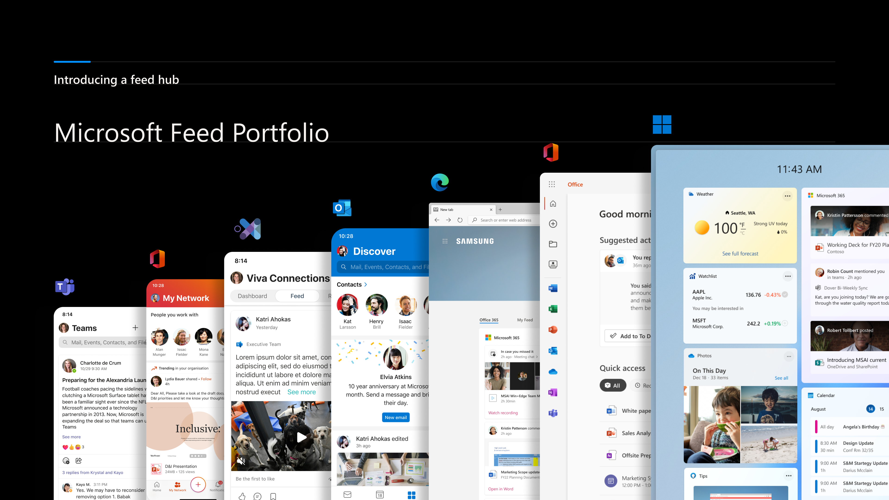
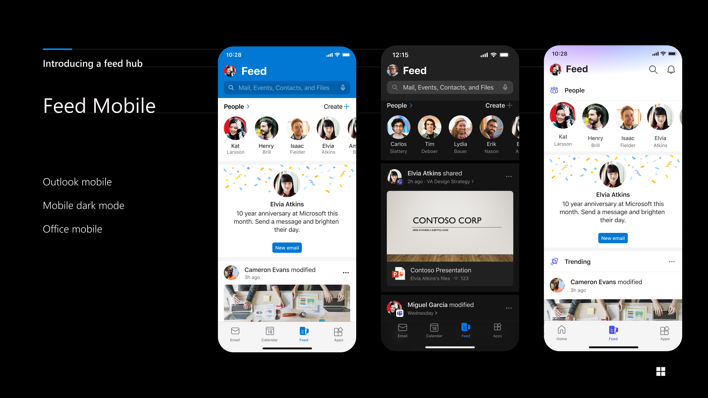

Overview
As Principal UX Design Manager, I led design efforts for Microsoft Feed, planning and prioritizing design work and tracking execution across my team. I coordinated design direction and delivery across multiple product groups in Microsoft, including Microsoft Office, Teams, Outlook, Windows, and Edge. I also partnered closely with user research to identify and validate new types of content that could add value in a productivity feed, expanding beyond traditional updates on files and sites.
Another major shift was adopting and contributing to the Fluent 2 design framework to modernize the experience. We leveraged its token‑based color system to enable scalable theming across products and brand contexts, supporting both light and dark modes. This work required balancing hands‑on UX design with cross‑team alignment to ensure a cohesive and consistent Feed experience across the Microsoft ecosystem.
Design Work


